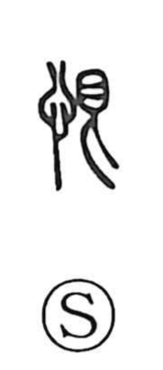

恨

Kun: uramu, urameshii, urami | On: kon
to bear a grudge ・ to resent ・ hatred ・ resentment
Explanation
Shirakawa reads 恨 as a phono-semantic compound: the heart radical 心 supplies the semantic core, while 艮 (kon) provides the sound and the image. He interprets 艮 as a figure turning back beneath an eye 目—a “curse eye” endowed with spellbinding force. In characters like 限, this sign is set before 阜, the divine ladder for ascent and descent, to depict reaching the utmost boundary where one can no longer advance and must retreat. With 心 added, 恨 names the heart’s reluctant, thwarted feeling at that moment of forced withdrawal when one wants to go forward but cannot—hence the senses “to bear a grudge,” “to resent,” and “to hate or detest.”